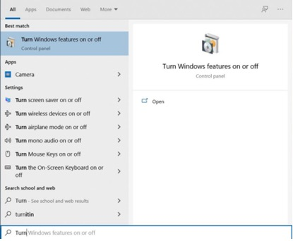
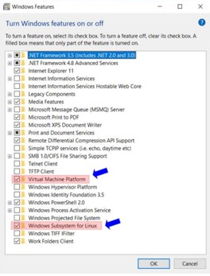
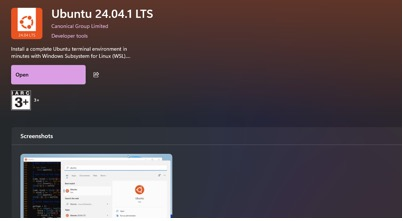
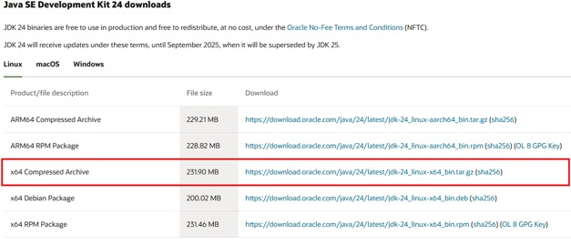
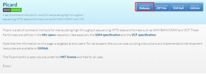
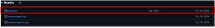
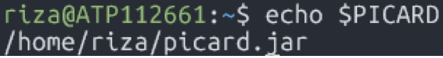
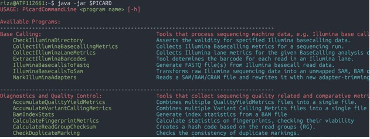
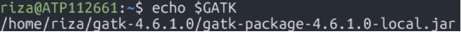
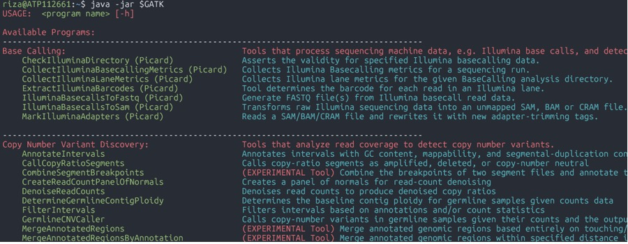

List of Software and Web Applications
To ensure compatibility and optimal
performance, download and install the latest version of the software that
matches your computer's operating system, unless a specific version is
required.
○
Download
the binary distribution for your system from the "Binaries" table,
"Stable build" column. Then just unzip the folder and move to the
training directory
Direct link as of 2024-06-06:
Linux binary to use in WSL2
Windows binary to use in cmd.exe / PowerShell
MacOS users need Mac binary
Note - PLINK is not a regular app to be installed into Program Files. It is
just a command-line executable. You only need to download it and make sure you
have privileges to execute it (i.e. admin privileges). We will show an example
of how to use it. To run it, you need to have a terminal-like application, on
Windows it is Powershell.
To check installation, open Powershell, navigate to
the folder containing plink.exe file, and type “.\plink.exe
--help“
(Alternatively, use “cmd” )
i.
From
the plink folder, go to the address bar and highlight the address.
ii.
Type
“cmd” on the address bar.
iii.
Type
“.\plink.exe --help”
● Video how to install on Windows.
○
Mirror:
https://cran.csie.ntu.edu.tw/
i.
To
install “source-only” packages on Windows one may need
Rtools: https://cran.r-project.org/bin/windows/Rtools/
If your version of R is R-4.2.xx, install Rtools42.
If your version of R is R-4.3.xx, install Rtools43.
○
install.packages("qqman")
○
install.packages("ggplot2")
○
install.packages(c("dplyr",
"glue", "reshape2"))
○
install.packages(c("readr", "vroom",
"openxlsx"))
○
install.packages("BEDMatrix")
○
install.packages("BiocManager") # to install packages from Bioconductor
○
BiocManager::install("snpStats")
○
install.packages(c("shinydashboard",
"DT", "bslib", "rmarkdown"))
4.
Optional
software
○
Admixture
- http://dalexander.github.io/admixture/download.htm
○
GEMMA
- https://github.com/genetics-statistics/GEMMA/releases
○
SnpEff and SnpSift - https://pcingola.github.io/SnpEff/
Note that
PLINK can be installed on Ubuntu using apt:
$ sudo apt
install plink1.9
but do NOT do "install plink" without a version, as it will install a
different application (network utility) with the same name.
R can be
installed as
$ sudo apt install r-base
a.
Check
version of Java by opening a Powershell or Terminal
and issuing command:
b.
java -version
a.
Open
TASSEL, open the tutorial dataset packaged within the Tassel folder.
a.
Open
RStudio, and run “version” command in the console
i.
Install
the package “qqman” using the menu.
a.
Open
Powershell (MS Windows) or Terminal (Mac OS) and note
the current working directory by typing pwd (then Enter)
a.
If
you are on Windows:
b.
Check
WSL version
c.
wsl
--version
d.
wsl
--list
Software Installation Guide
Helpful links:
https://docs.microsoft.com/en-us/windows/wsl/install
https://docs.microsoft.com/en-us/windows/wsl/about
Make sure Windows
is up to date. Recommended to run Windows 10 version 2004 and higher (Build 1904 and higher) or
Windows 11.
1.
Go to Turn Windows feature on
or off in the Control Panel.

2.
Enable
Windows Subsystem for Linux and Virtual Machine Platform. Tick the
corresponding checkbox then click OK.

3.
Restart the computer.
4.
Download the latest wsl2
kernel here.
5.
Follow
the instructions in the link for installation.
1.
Go to Microsoft store and
search for Ubuntu
2.
Install Ubuntu 24.04.1 LTS

|
sudo apt-get update sudo apt-get install fastqc |
|
sudo apt-get install fastp |
|
sudo apt-get install bwa |
|
sudo apt-get update -y sudo apt-get install -y samtools |
|
sudo apt install bcftools |
1.
Download
the latest package (JDK24) for Linux / MacOS

OR just simply use
wget
|
wget https://download.oracle.com/java/24/latest/jdk-24_linux-x64_bin.tar.gz |
2.
Change
the directory to the location where you want to install the JDK, then move the
.tar.gz archive
file to the current directory.
3.
Open WSL2 terminal and
navigate to the directory where you transferred the JDK package.
4.
Unpack
the tarball and install the downloaded JDK:
|
tar zxvf jdk-24_linux-x64_bin.tar.gz |
5.
Set environment variables.
|
nano ~/.bashrc |
6.
Add
the following lines to your ~/.bashrc
file (edit the code according to the location of the file on your machine)
|
export JAVA_HOME='/home/riza/jdk-24' export PATH=$JAVA_HOME/bin:$PATH |
7.
Save and close the file. Once
saved, have the current session read the file and verify installation
|
source ~/.bashrc java -version |
You should see
something like this:
1.
Download the latest jar file here.


OR just simply use wget
|
wget https://github.com/broadinstitute/picard/releases/download/3.3.0/picard.jar |
2.
Transfer the file to the
directory where you want to save it.
3.
To use
picard, the full path to the jar file needs to be
specified in the command, in this case it looks like this:
|
java -jar /home/riza/picard.jar |
4.
To make this easier set up a
shortcut
|
nano ~/.bashrc |
5.
Add
the following lines to your ~/.bashrc
file
|
export PICARD='/home/riza/picard.jar' |
6.
Save and close the file. Once
saved, have the current session read the file and check if the environment
variable was assigned properly by doing the following commands
|
source ~/.bashrc echo $PICARD |
You should see
something like this:

7.
Verify installation
|
java -jar $PICARD |

1.
Download the latest file here.
OR just simply use wget
|
wget https://github.com/broadinstitute/gatk/releases/download/4.6.1.0/gatk-4.6.1.0.zip |
2.
Extract and transfer the file
to the directory where you want to save it.
3.
Set
the environment variable similarly to how it’s done in picard.
4.
Save and close the file. Once
saved, have the current session read the file and check if the environment
variable was assigned properly by doing the following commands
|
source ~/.bashrc
echo
$GATK |
You should see something like
this:

5.
Verify installation
|
java
-jar $GATK |
